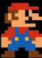
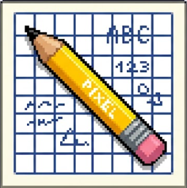
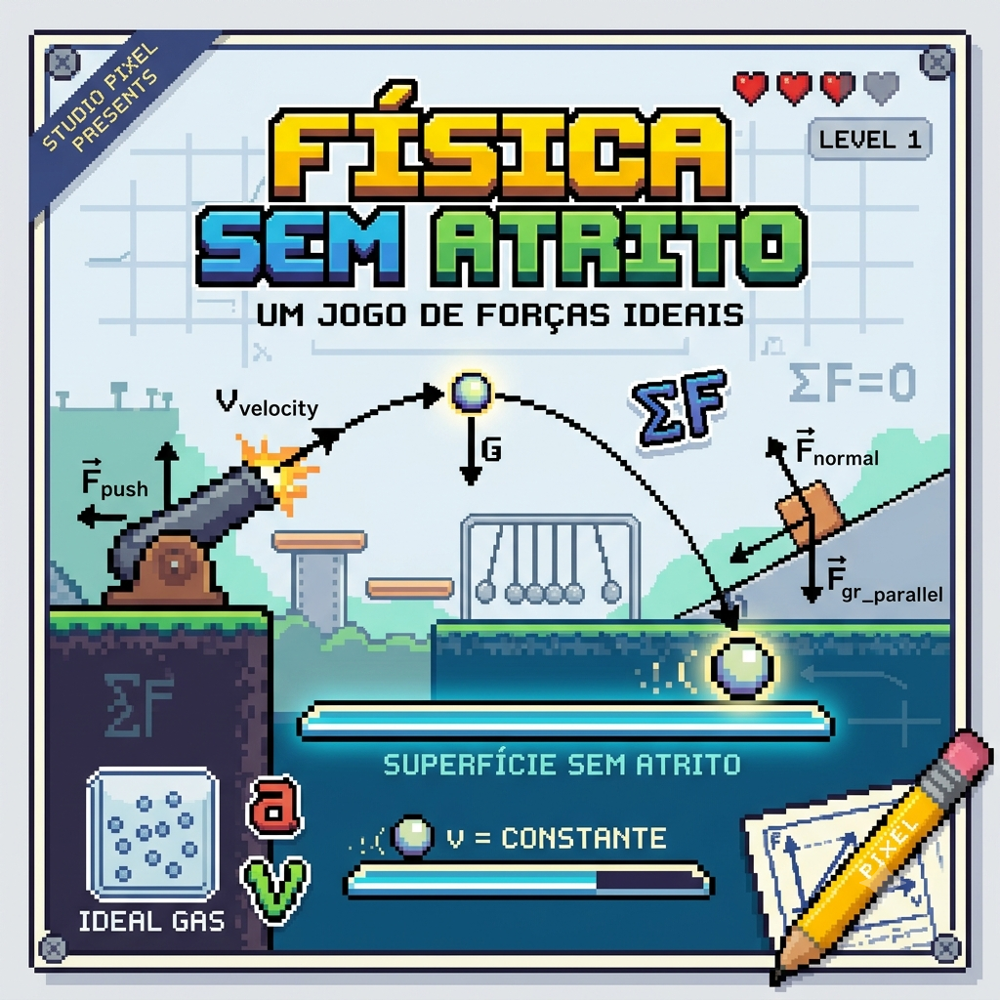

Olá, sou Fabrício fagundes e atualmente exerço a profissão de game dev. Eu sempre gostei de programação, porém realizei uma graduação de física. Até que um dia cansei de ser somente professor e decidi que queria criar meu próprio jogo. Então, participei de importantes projetos e passei por experiências enriquecedoras na minha carreira.


O principal projeto da minha carreira é relacionado às duas áreas que eu gosto. No caso, física e game development, nele eu criei um jogo que trabalha os conceitos de física com uma maneira fácil e divertida de aprender, literalmente "sem atrito".